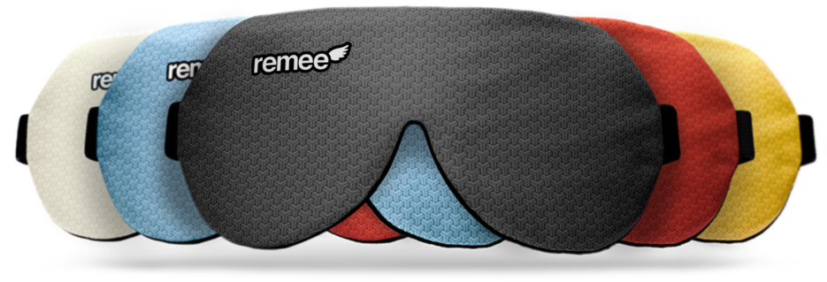
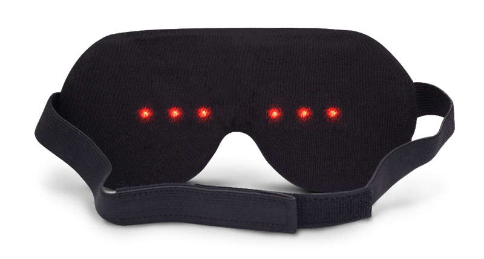

The world's first comfortable, affordable lucid dreaming sleepmask.
What is Remee?
Remee is a sleep mask designed to help increase the frequency of your Lucid Dreams. Using low profile electronics hidden in a comfortable sleep mask, Remee supplies customizable light patterns that your dreaming mind can recognize, allowing you to take control. Whether you've only just discovered lucid dreaming or you're a veteran trying to get lucid more often, Remee can help!

Program Remee
Remee's six LEDs serve as your touchstone to the waking world. Using our online tool, you can personalize your dream signal to create a combination of pattern, timing, and brightness that is unique to your sleep style.